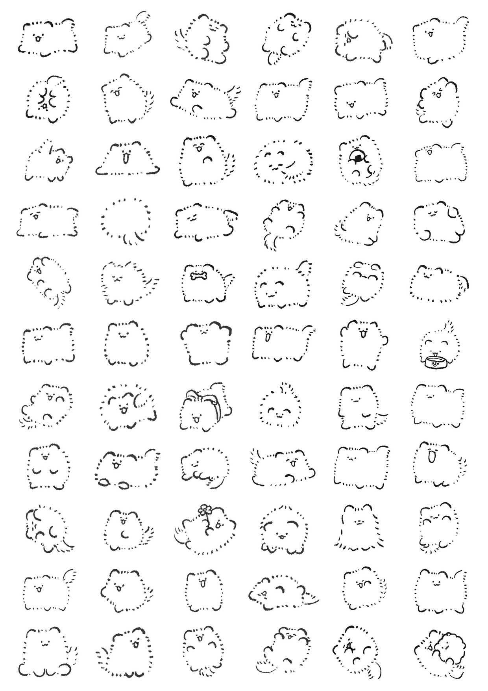
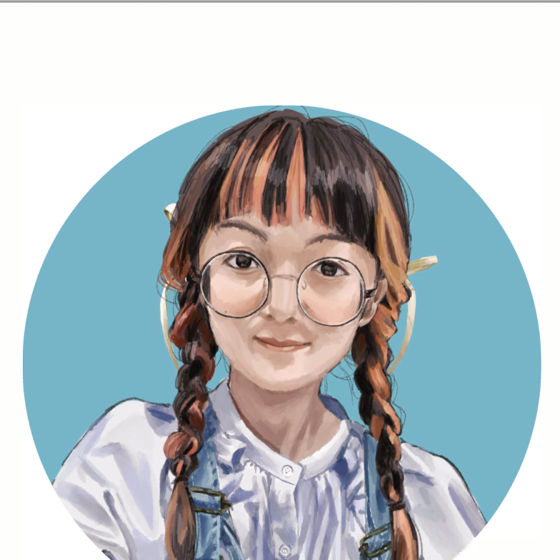

About
「王道 × 意外性」
単に邪道を行くのではなく、前提として面白い要素に新しい視点を加えることで、
記憶に残る体験を作ることを目指しています。
普段から良いと思ったものをメモし、心に響いた部分を抽出・組み合わせて、
さらにひとつ加えることで「あっ」と驚くようなコンテンツ作りが目標です。

Approach
創作の軸
王道 × 意外性
単に邪道を行くのではなく、前提として面白い要素に新しい視点を加えることで、記憶に残る体験を作ることを目指しています。普段から良いと思ったものをメモし、心に響いた部分を抽出・組み合わせて、さらにひとつ加えることで「あっ」と驚くようなコンテンツ作りが目標です。
音楽・映画・ゲーム・絵画など、日常から「良い」と感じたものをジャンルを問わずメモ。素材の引き出しを常に増やしています。
「何を伝えるか」を一言で決めてからスタート。テーマが曖昧なまま手を動かさないよう、まず軸を固めます。
複数パターンのラフで伝わる構図を選択。視線誘導・シルエット・余白の三点を特に意識します。
完成後も「本当に伝わるか」を自問し、コンセプトとのズレがあれば迷わず修正。満足できるまで手を止めません。
やると決めたことはどんな障害があっても妥協せず遂行します。絶対にやり遂げるという意志が、クオリティの土台です。
締め切り厳守をモットーに、常に1週間以上の余裕を持って納品。不備がないか確認・ブラッシュアップを欠かしません。
作りたいものに必要なら未経験の技術も進んで習得。Live2D・Unity・LLM活用など、手段を増やすことで表現の幅を広げています。
連想ゲームや見立てから新しい表現を探究。「主役より引き立てるための画面設計」が発想の原点です。
原作・依頼者・一緒に作る全ての人への敬意を忘れません。自分のために作ってくれた相手には最大限の感謝を返します。
Works
画像をクリックで拡大 · ←→キーで前後に移動
Contact
ご依頼・ご連絡はメールにてお気軽にどうぞ。
15daifuku72@gmail.com